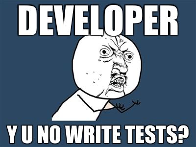

Practical Erlang testing techniques
| Author: |
Bob Ippolito (@etrepum) |
|---|
| Date: |
June 2011 |
|---|
| Venue: | Erlang Factory London 2011 |
|---|
Introduction

Doing It Wrong
- Write code without tests or review
- Push to production branch
- Deploy
- Firefight [and repeat]
Doing It Better
- Write code, tests and docs
- Push to issue branch
- Review [and repeat]
- Merge to production branch
- Continuous Integration server runs tests (again)
- Deploy
rebar
- A sophisticated build-tool for Erlang projects that follows OTP
principles
- https://github.com/basho/rebar
- Handles common build tasks
- Builds your .app from an .app.src
- Manages dependencies (somewhat)
rebar src/yourapp.app.src
{application, yourapp,
[{description, "..."},
{vsn, "1.2.3"}]}.
rebar.config
{erl_opts, [fail_on_warning, debug_info]}.
{cover_enabled, true}.
{clean_files, ["*.eunit", "ebin/*.beam"]}.
{eunit_opts, [verbose,
{report, {eunit_surefire, [{dir, "."}]}}]}.
rebarized Makefile
REBAR=`which rebar || ./rebar`
all: deps compile
deps:
@$(REBAR) get-deps
compile:
@$(REBAR) compile
test:
@$(REBAR) skip_deps=true eunit
clean:
@$(REBAR) clean
rebar alternatives
- In open source Erlang code, rebar seems to have already won
- Agner complements rebar, provides better package discovery and
dependency management
- Other tools include CEAN, EPM, Sinan/Faxien but these seem unpopular
- Consolidation would be good here
EUnit
- Ships with Erlang
- Easy to use
- Works well (enough) with Jenkins
EUnit boilerplate
-ifdef(TEST).
-include_lib("eunit/include/eunit.hrl").
%% TEST CODE HERE
-endif.
EUnit test
inc_0_test() ->
?assertEqual(
1,
increment(0)).
EUnit test generator
inc_test_() ->
[{"inc by 0",
fun () ->
?assertEqual(1, increment(0))
end},
{"inc by 1",
?_test(?assertEqual(2, increment(1)))}].
EUnit fixture
inc_setup() -> return_value_from_setup.
inc_cleanup(setup_return_value) -> ok.
inc_fixture_test_() ->
{foreach,
fun inc_setup/0,
fun inc_cleanup/1,
[{"inc by 0",
?_test(?assertEqual(1, increment(0)))}]}.
running EUnit tests
$ make test
==> inc (eunit)
Compiled src/inc.erl
================ EUnit ================
module 'inc'
inc: inc_0_test...ok
[…]
[done in 0.012 s]
=======================================
All 4 tests passed.
Cover analysis: […]/.eunit/index.html
EUnit alternatives
- Common Test also ships with OTP. Much more powerful, but also more
complicated. We're not writing a lot of system tests yet, so we
haven't explored this
- Yatsy is an alternative to Common Test used by Kreditor. Doesn't
seem very popular
- etap is based on Perl's Test Anything Protocol. Not very popular
cover
- A Coverage Analysis Tool for Erlang
- Ships with Erlang
- Run by rebar eunit (with {cover_enabled, true}.)
cover html output
- open .eunit/index.html in a browser
- Lists analysed modules with module coverage
- 100% is awesome, go for that
- Click on module name to see report
- Source lines not covered are colored red
meck
- A mocking library for Erlang
- https://github.com/esl/meck
- Makes it possible to test non-functional code
- Can also be used to simplify dependencies
meck usage (constants)
-define(WHENEVER, 1303513575954).
statebox_test() ->
meck:new(statebox_clock),
meck:expect(statebox_clock,
timestamp, 0, ?WHENEVER),
[…],
meck:unload(statebox_clock).
meck usage (funs)
next_minute_test() ->
meck:new(mochierl_util),
meck:expect(mochierl_util, now_to_msec,
fun() -> 55000 + 60000 * 123345 end),
[…],
meck:unload(mochierl_util).
meck fixture for EUnit
meck_setup() ->
Modules = [mocked_modules, …],
meck:new(Modules),
Modules.
meck_fixture_test_() ->
{foreach,
fun meck_setup/0,
fun meck:unload/1,
[{"meck test…",
[…]}]}.
meck caveat: OTP modules
- Modules that are "stuck" can't always be mocked
- code:unstick_mod/1, code:stick_mod/1 might work
- Better to just refactor with a proxy module
- For example, statebox_clock:timestamp/0 instead of os:timestamp/0
meck workaround: OTP modules
-module(statebox_clock).
-export([timestamp/0, now_to_msec/1]).
%% @doc …
-spec timestamp() -> integer().
timestamp() ->
now_to_msec(os:timestamp()).
meck caveat: side effects
- The output doesn't depend (only) on the input
- More than one call happens to this function in the test
- We have several hacky workarounds for this
- BUT good solution is in development (see github eproxus/meck)
meck workaround: side effects
now_test() ->
meck:new(statebox_clock),
meck:sequence(statebox_clock, clock, 0,
[1, 2, 3, 4, 5]),
?assertEqual(1, statebox:clock()),
?assertEqual(2, statebox:clock()),
ok.
meck alternatives
- erlymock is probably the only worthy "competitor" for meck
- effigy, emock are unmaintained and do not work with cover
- We only have experience with effigy (legacy code) and meck
PropEr EUnit Skeleton
%% Before eunit.hrl include
-include_lib("proper/include/proper.hrl").
%% EUnit tests
proper_module_test() ->
?assertEqual(
[],
proper:module(?MODULE, [long_result])).
PropEr Specs Example
-spec int_ceil(float()) -> integer().
int_ceil(X) ->
T = trunc(X),
case (X - T) of
Pos when Pos > 0 -> T + 1;
_ -> T
end.
int_ceil_spec_test() ->
proper:check_spec({?MODULE, int_ceil, 1})
PropEr Property Example
-spec digits(float()) -> string().
digits(F) -> […].
%% In the EUnit test block
prop_digits_exact() ->
?FORALL(F, float(),
begin F =:= list_to_float(digits(F)) end).
PropEr Generator Example
unichar() ->
union([integer(0, 16#d7ff),
integer(16#e000, 16#10ffff)]).
utf8_binary() ->
?LET(L, list(unichar()),
unicode:characters_to_binary(L, utf8)).
prop_valid_utf8_bytes_valid() ->
?FORALL(B, utf8_binary(),
begin B =:= valid_utf8_bytes(B) end).
PropEr Caveats
- GPLv3 license might be complicated to integrate with your source
- It's a work in progress, no proper release yet
- Missing some useful features (improper lists, custom generators for
automatic spec testing, etc.)
- Make sure to include PropEr hrl before EUnit (?LET macro conflict)
PropEr Alternatives
- QuviQ QuickCheck - high quality commercial tool with many advanced
features. Free QuickCheck Mini also available.
- Trifork QuickCheck (triq) - Free (Apache license) QuickCheck
clone. Does not yet have the unique features in PropEr
dialyzer
- a DIscrepancy AnalYZer for ERlang programs
- Static analysis tool
- Great at finding stupid mistakes
dialyzer plt building
$ dialyzer --build_plt \
--output_plt .dialyzer-R14B01.plt \
--apps kernel stdlib sasl erts ssl \
tools os_mon runtime_tools crypto \
inets xmerl webtool snmp public_key \
mnesia eunit syntax_tools compiler \
./deps/*/ebin
dialyzer analysis
$ dialyzer ./ebin --plt .dialyzer-R14B01.plt \
-Wunmatched_returns \
-Werror_handling \
-Wrace_conditions \
-Wbehaviours \
-Wunderspecs
dialyzer analysis notes
- You may not want to turn on all of the warnings
- You may want to disable other warnings
- See dialyzer(3) for all options
dialyzer caveats
- Building the initial PLT is slow, expect to wait 20+ minutes
- Could use better tools to manage PLTs, they are expensive to
generate and specific to an OTP release
- We'd use it a lot more if it weren't for the hassle of PLTs
Jenkins
- Jenkins CI is the leading open-source continuous integration server
- Used to be called Hudson
Jenkins - Install Plugins
- Manage Jenkins » Manage Plugins » Available
- Git plugin
- Warnings Plugin
- xUnit Plugin
- Install
- Schedule Restart
Jenkins - New Job
- New Job
- Build a free-style software project
Jenkins - SCM
- Git
- URL of repository: git://github.com/mochi/statebox.git
- Branches to build: master
Jenkins - Build
- Build Triggers
- Add build steps:
- Execute shell: make clean
- Execute shell: make all test
Jenkins - Post-build Actions
- Scan for compiler warnings
- Scan console log
- Parsers: Erlang Compiler
- Publish JUnit test result report
Jenkins - Watch a build
- Build Now
- Click entry in Build History
- Console Output
Jenkins alternatives
- Use whatever works for you, we like Jenkins
- Buildbot
- Continuum
- Moebius?
Wrap-up
- Use rebar
- Adding EUnit tests is easy
- Use cover to gauge progress (100% is #winning)
- meck can help you test non-functional code
- PropEr / QuickCheck is REALLY GREAT
- Please improve the dialyzer toolchain
- Setting up Continuous Integration is easy